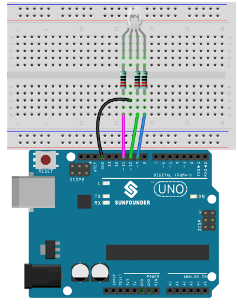

Lesson 7 RGB LED¶
Introduction¶
Previously we’ve used the digital pin to control an LED brighten and dim. In this lesson, we will use PWM to control an RGB LED to flash various kinds of color. When different PWM values are set to the R, G, and B pins of the LED, its brightness will be different. When the three different colors are mixed, we can see that the RGB LED flashes different colors.

{kind=link}
Experimental Principle¶
PWM
Pulse width modulation, or PWM, is a technique for getting analog results with digital means. Digital control is used to create a square wave, a signal switched between on and off. This on-off pattern can simulate voltages in between full on (5 Volts) and off (0 Volts) by changing the portion of the time the signal spends on versus the time that the signal spends off. The duration of “on time” is called pulse width. To get varying analog values, you change, or modulate, that width. If you repeat this on-off pattern fast enough with some device, an LED for example, it would be like this: the signal is a steady voltage between 0 and 5V controlling the brightness of the LED. (See the PWM description on the official website of Arduino).
In the graphic below, the green lines represent a regular time period. This duration or period is the inverse of the PWM frequency. In other words, with Arduino’s PWM frequency at about 500Hz, the green lines would measure 2 milliseconds each.

A call to analogWrite() is on a scale of 0 - 255, such that analogWrite(255) requests a 100% duty cycle (always on), and analogWrite(127) is a 50% duty cycle (on half the time) for example.
You will find that the smaller the PWM value is, the smaller the value will be after being converted into voltage. Then the LED becomes dimmer accordingly. Therefore, we can control the brightness of the LED by controlling the PWM value.
RGB LED
RGB LEDs emit light in various colors. An RGB LED packages three LEDs of red, green, and blue into a transparent or semitransparent plastic shell. It can display various colors by changing the input voltage of the three pins and superimpose them, which, according to statistics, can create 16,777,216 different colors.

RGB LEDs can be categorized into common anode and common cathode ones. In this experiment, the latter is used. The common cathode, or CC, means to connect the cathodes of the three LEDs. After you connect it with GND and plug in the three pins, the LED will flash the corresponding color.

An RGB LED has 4 pins: the longest one is GND; the others are Red, Green and Blue. Touch its plastic shell and you will find a cut. The pin closest to the cut is the first pin, marked as Red, then GND, Green and Blue in turn.

Or you can distinguish them in another way. As GND is the longest one and can be defined directly, you can test the other three pins by giving them a small voltage. In addition, you need to add the current limiting resistor to protect the component.
Principle:
On the Uno board, 3, 5, 6 and 9-11 is the PWM pins. Provide 8-bit PWM output with the analogWrite() function. You can connect any of these pins.Here we input a value between 0 and 255 to the three pins of the RGB LED to make it display different colors. After connecting the pins of R, G, and B to a current limiting resistor, connect them to the pin 9, pin 10, and pin 11 respectively. The longest pin (GND) of the LED connects to the GND of the Uno. When the three pins are given different PWM values, the RGB LED will display different colors.
The schematic diagram:

Experimental Procedures¶
Step 1: Build the circuit
Step 2: Open the code file.
Step 3: Select the Board and Port.
Step 4: Upload the sketch to the board.
{kind=link}
Here you should see the RGB LED flash circularly red, green, and blue first, then red, orange, yellow, green, blue, indigo, and purple.

Code¶
Code Analysis 7-1 Set the color¶
Here use the color() function to set the color of the RGB LED. In the code, it is set to flash 7 different colors.
You can use the paint tool on your computer to get the RGB value.
Open the paint tool on your computer and click to Edit colors.

Select one color, then you can see the RGB value of this color. Fill them in the code.

void loop() // run over and over again
{
// Basic colors:
color(255, 0, 0); // turn the RGB LED red
delay(1000); // delay for 1 second
color(0,255, 0); // turn the RGB LED green
delay(1000); // delay for 1 second
color(0, 0, 255); // turn the RGB LED blue
delay(1000); // delay for 1 second
// Example blended colors:
color(255,0,252); // turn the RGB LED red
delay(1000); // delay for 1 second
color(237,109,0); // turn the RGB LED orange
delay(1000); // delay for 1 second
color(255,215,0); // turn the RGB LED yellow
delay(1000); // delay for 1 second
color(34,139,34); // turn the RGB LED green
delay(1000); // delay for 1 second
color(0,112,255); // turn the RGB LED blue
delay(1000); // delay for 1 second
color(0,46,90); // turn the RGB LED indigo
delay(1000); // delay for 1 second
color(128,0,128); // turn the RGB LED purple
delay(1000); // delay for 1 second
}
Code Analysis 7-2 color() function¶
void color (unsigned char red, unsigned char green, unsigned char
blue)// the color generating function
{
analogWrite(redPin, red);
analogWrite(greenPin, green);
analogWrite(bluePin, blue);
}
Define three unsigned char variables, i.e., red, green and blue. Write their values to redPin, greenPin and bluePin. For example, color(128,0,128) is to write 128 to redPin, 0 to greenPin and 128 to bluePin. Then the result is the LED flashing purple.
analogWrite(): Writes an analog value (PWM wave) to a pin. It has nothing to do with an analog pin, but is just for PWM pins. You do not need to call the pinMode() to set the pin as output before calling analogWrite().